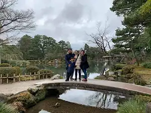
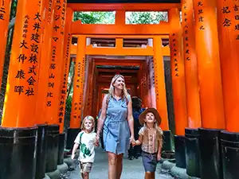
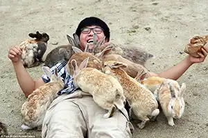

All the photos we've recieved from happy vacationers!
'An event wherein cats were on a train!' Submitted by Jane Doe'A large Japanese shrine.' Submitted by a user that chose to remain anonymous'The Book Hotel was awesome!' Submitted by Randy Real'A selfie From Tokyo' Submitted by Nunya Busenez'A Japanese Temple.' Submitted by a user that chose to remain anonymous'A small shrine I found.' Submitted by a user that chose to remain anonymous'Found this massive field!' Submitted by Pear Sonn'The cats LOVE me!!!' Submitted by Totly Apperson

'Me and my siblings at the Kenrokuen Garden!' Submitted by Plase Holdar

'My kids loved exploring with me!' Submitted by the Natfaeck Family'Tokyo, and I'd like to remain anonymous.' Submitted by a user that chose to remain anonymous

'I couldn't get up!' Submitted by Guy Definite